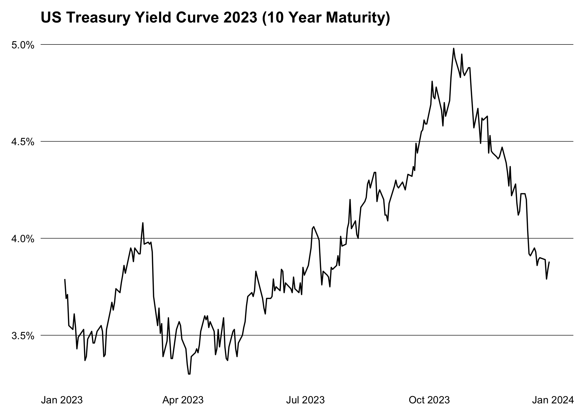

Overview
The goal of treasury is to provide a simple and modern interface to the US treasury XML feed for daily interest rates.
Installation
You can install the released version of treasury from CRAN with:
install.packages("treasury")And the development version from GitHub with:
# install.packages("pak")
pak::pak("m-muecke/treasury")Usage
treasury functions are prefixed with tr_ and follow the naming convention of the XML feed.
library(treasury)
yield_curve <- tr_yield_curve(2023)
head(yield_curve)
#> date maturity rate
#> <Date> <char> <num>
#> 1: 2023-01-03 1 month 4.17
#> 2: 2023-01-03 2 month 4.42
#> 3: 2023-01-03 3 month 4.53
#> 4: 2023-01-03 4 month 4.70
#> 5: 2023-01-03 6 month 4.77
#> 6: 2023-01-03 1 year 4.72